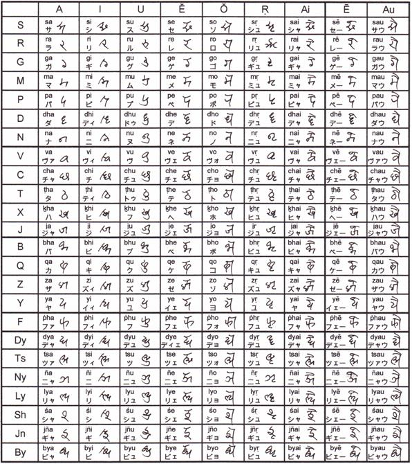

大歓喜トップ >> 声楽と音度名唱 >> 移動サの楽譜書き込み
移動サの楽譜書き込み
楽譜書き込みの必要性
拡張移動サは、固定ドのように五線譜とピアノの鍵盤との対応が分かれば歌えるというものではなく、移動ドのように調号を見て少し考えればほぼ機械的に割り出せるというものでもない。場合によっては曲全体を通覧し、各パートの旋律の動きや使用音を解析した後に、ようやく振り当てられるものである。それだけドレミや五線譜の縛りから自由であり、柔軟性に富んでいるということであるが、ぱっと見てすぐ歌えない以上、解析して求めた結果をメモしておくことの意義は大きい。「移動ドなんかは書き込む習慣が無いよ」という方でも、拡張移動サは楽譜に書き込むことをお勧めしたい。
書き込みに使う文字について
拡張移動サは、原則として、日本語母語話者を含む多くの人になるべく容易く言い分け／聞き分けができるように音度名を設定しており、カナ書きでもアルファベット表記でも弁別に不自由はない。
しかし、楽譜には、他にも多くの情報を書き込むものである。例えば、外国語の発音についての注意書きには、カナかアルファベット、またはIPA発音記号を書き込むであろう。音名あるいはコードネームとして、または転調時の次の調の名前として、アルファベットを書き込むこともあるだろう。階名のドレミをカナ書きすることもあるだろう。強弱や表情に関しても、様々にメモがなされるであろう。
そうした他の情報と紛れない目的で、インド系の文字を応用した独特の字体を用いることができる。
それが下の表である。実際によく使われるのは、左上の方に位置する二十個程度の文字だけであり、内容8行目の「V」の行より下が登場するのは、かなり特殊な場合だけである。特に、下半分の12行、即ち「B」の行以下を使うのは、半音単位より細かい四分音を使う音楽だけであるので、そのような音楽に縁のない方は、丸々無視していただいて構わない。
＜書き込み用字体一覧＞

専用文字の特長について
インドの文字体系に倣っているため、音節に含まれる子音と母音によって字形の形に規則性があり、文字数が多いわりには覚えるのに負担がかからない。インド系の文字をあらかじめご存知の方にとっては、特に楽である。
１音節１文字であるため、幅を取らない。従って、どこまでが一つの音符に対応するかを読み取るのに混乱が生じない。
カナやアルファベットで書く場合に比べても、画数が大幅に多くなることがなく、字形が平易である。であるから、筆記のために時間が長く取られすぎることはない。
音の高低関係の表記について
例えば「サ」の次に「パ」が書いてあるとき、その「パ」は、前の「サ」より完全五度上なのか、完全四度下なのか、ということは、それだけでは判別できない。しかし、五線譜に書き込む場合には、すぐ近くに五線上の音符があり、見掛け上から音の高低が分かるから、それで問題はなく、通常、そのための特別な表記は行わない。
しかし、旋律を拡張移動サ表記のみに頼って表す場合には、「S-スヴァラ」を基準に区切ったオクターヴを考え、オクターヴ圏の移動を付記することができる。その方法は、例えば次の通りである。
「S-スヴァラ」から上方の「N-スヴァラ」、或いは拡張音度名の「J-スヴァラ」、或いは四分音用音度名の「Y-スヴァラ」までの間は、同じオクターブ圏（またはスターイー）に属すると考える。その範囲内の音高推移には、特別の記号を付さない。
それよりも１つ高いオクターヴ圏に移ったときには、移った先の音度名表記の上方右寄りに、短い縦画を一本書く。逆に、１つ低いオクターヴ圏に移ったときには、移った先の音度名表記の下方右寄りに、短い横画を一本書く。
この表記は、直前の音度名表記に対して相対的に行われる。「サ」からすぐ下の「ヌ」に降りたときには、短い横画が付くが、さらにそこから下の「ディ」に降りたときには、何も付かない。直前の音度名表記と同じオクターヴ圏だからである。その後もう一度、元の「サ」に戻ると、その「サ」には短い縦画が付く。直前の音度名表記より１つ上のオクターヴ圏だからである。
大きな跳躍で、２つ上のオクターヴ圏に移るときには、短い縦画を平行に二本書く。同様に、２つ下のオクターヴ圏に移るときには、短い横画を平行に二本書く。
それ以上の跳躍は滅多にあり得ないが、例えば３つ上のオクターヴ圏に移るときは、上方の短い縦画一本の右にデーヴァナーガリー数字で小さく３と書き添え、３つ下に移るときには、下方の短い横画一本の下にデーヴァナーガリー数字で小さく３と書き添える。
これらの記号を、スターイー遷移記号と呼ぶ。
同じ音度名の音が続く場合の略記について
同じ音度名の音が連続する場合、小さな「o」字状の記号で、直前の音度名表記の代用とすることができる。その記号にも、必要に応じてスターイー遷移記号を付記できる。
長いタイで繋がっている音符に対しては、小さな「s」字状の記号を書くことで、直前の音符の延長を示すことができる。
解釈に迷う場合は併記を
実際に曲を見ていると、どこで転調が完了したのか確定しづらい場合や、短い部分転調で音度名の読み替えをするかどうか迷う場合が多々出てくる。
そういう場合には、一つに絞ろうとして迷うのではなく、複数の解釈による音度名を積極的に重複して書き重ね、両方で歌い馴染ませることが有用である。
（最終更新2011.6.2）
大歓喜トップ >> 声楽と音度名唱 >> 移動サの楽譜書き込み